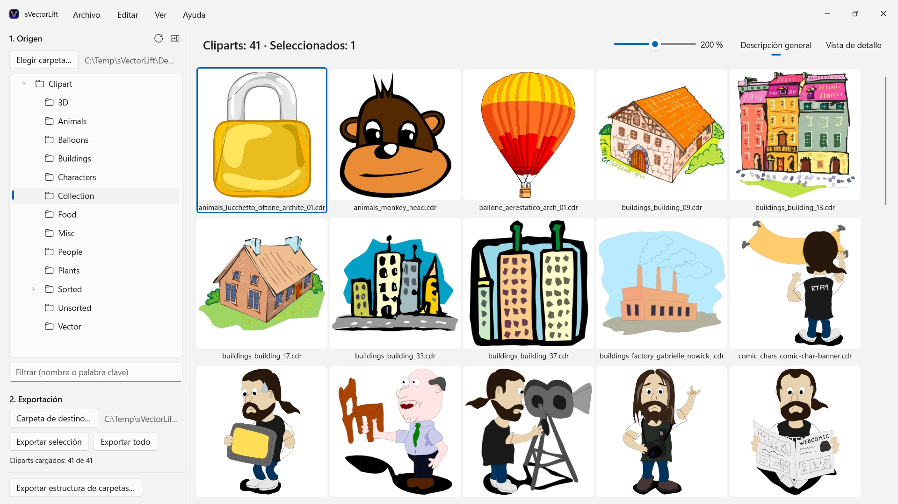
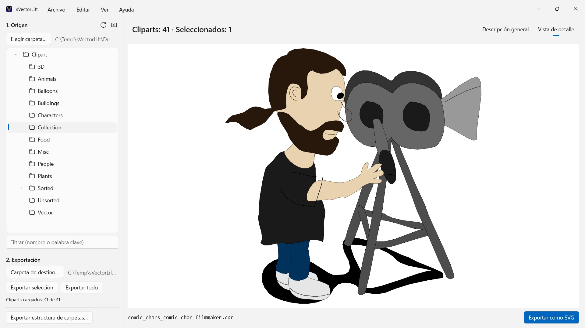

sVectorLift
Abre CorelDRAW 6–9 (.cdr), CMX incluido CDRX, WMF, CGM, QuickDraw 3D y SVG
Miles de cliparts vintage en CD de CorelDRAW, atrapados en formatos que casi ningún programa abre ya. sVectorLift te muestra colecciones enteras de un vistazo y las convierte en SVG de verdad, listos para usar hoy.
 Ver el vídeo – 3 minutos en YouTube, en inglés con subtítulos en español
Ver el vídeo – 3 minutos en YouTube, en inglés con subtítulos en español


En alguna estantería duerme un CD lleno de clipart que compraste hace años. Los archivos siguen ahí, intactos. Pero casi nada en tu PC los abre ya, y menos aún te muestra toda la colección de un vistazo.
Idiomas compatibles (25): Deutsch · English · Español · Français · Italiano · Nederlands · Português (Brasil) · Português (Portugal) · Svenska · Norsk · Suomi · Polski · Čeština · Hrvatski · Magyar · Română · Türkçe · Русский · Українська · فارسی · ไทย · 日本語 · 한국어 · 简体中文 · 繁體中文
La app usa el idioma para mostrar de Windows.
sVectorLift vuelve a poner ese material a trabajar. Reconstruye cada dibujo como un SVG de verdad: nítido a cualquier tamaño, editable y listo para llevarlo directamente a Illustrator, Affinity, Inkscape, Figma o a tu web. No solo vuelven a verse: vuelven a servir. De ahí el «Lift» del nombre: dibujos vectoriales vintage, elevados al nivel de las herramientas de hoy.
QUÉ ABRE
- Documentos de CorelDRAW (.cdr), versiones 6 a 9
- Corel Binary Meta File (.cmx), incluida la primera variante CDRX que otras herramientas se niegan a leer
- Windows Metafile (.wmf)
- Computer Graphics Metafile (.cgm)
- QuickDraw 3D Metafiles (.3dm, .3dmf), renderizados como imagen
- Scalable Vector Graphics (.svg), mostrados directamente
Muchos archivos con extensión .cdr no son documentos de CorelDRAW, sino CMX: justo por eso fallan los conversores habituales. sVectorLift lee los dos.
sVectorLift está pensado para bibliotecas de clipart: dibujos, símbolos, ilustraciones. No es una herramienta de maquetación ni pretende reproducir folletos de varias páginas ni plantillas de imprenta.
UNA CONVERSIÓN VECTORIAL DE VERDAD
Esto no es una captura de la miniatura de vista previa. sVectorLift interpreta el dibujo real: trazados y curvas Bézier, colores de relleno, degradados, contornos y líneas discontinuas, rellenos de patrón y textura, fotos incrustadas y objetos de texto. Lo que sale son datos vectoriales auténticos, que puedes escalar, recolorear y editar. No una foto de un dibujo.
Las imágenes puramente rasterizadas se exportan como PNG, así no se pierde nada.
¿Necesitas una imagen en lugar de un gráfico vectorial? «Exportar como PNG» y «Exportar como JPG» convierten cualquier dibujo en imagen, también los archivos SVG, con el tamaño que definas en Configuración.
EXPLORA TU BIBLIOTECA
- Árbol de carpetas para toda la colección, con subcarpetas
- Cuadrícula de miniaturas vectoriales nítidas, con control deslizante de tamaño
- Vista de detalle con navegación por las flechas del teclado
- Filtro por nombre o palabra clave
- Selección múltiple como en el Explorador de archivos: clic, Ctrl+clic, Mayús+clic, marco de selección, Ctrl+A
- Abre un archivo directamente desde el Explorador de archivos («Abrir con» o doble clic)
- Carpetas recientes que recuerdan dónde lo dejaste: subcarpeta y archivo seleccionado
- Exporta una selección o una carpeta entera de una sola vez
- Convierte estructuras de carpetas enteras, con sus subcarpetas, de una sola vez: la estructura se conserva en la carpeta de destino
- Cambia el nombre, muestra en el Explorador de archivos o mueve a la Papelera de reciclaje
- Reorganiza tu colección arrastrando y soltando sobre una carpeta del árbol: con las reglas del Explorador de archivos, Ctrl para copiar, Mayús para mover, y se deshace con Ctrl+Z; también hacia y desde el Explorador de archivos
RÁPIDO Y CUIDADOSO CON TU PC
Las miniaturas solo se generan para lo que estás viendo, en segundo plano, y se guardan en caché. Las carpetas grandes se abren al instante en lugar de bloquearse mientras se procesan miles de archivos.
Todo se queda en tu PC. Sin conexiones de red, sin cuentas, sin recopilación de datos.
CorelDRAW es una marca de Corel Corporation. sVectorLift es una app independiente y no está afiliada a Corel ni respaldada por Corel.
- Requiere Windows 11 o posterior
- 24 idiomas
- Soporte: SwiftAppsBavaria@gmx.net
- Política de privacidad